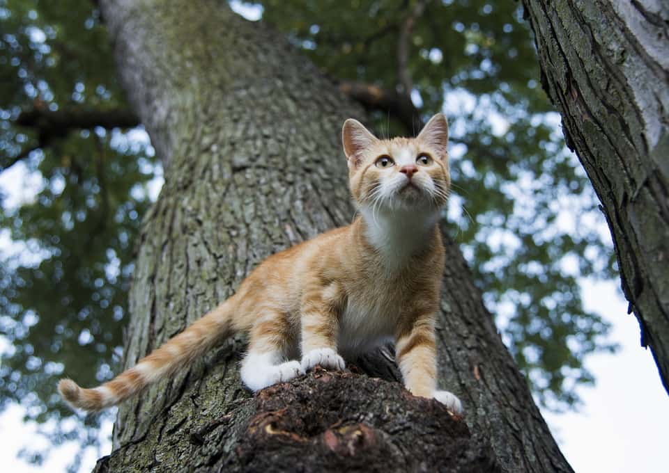

Спасли котенка
Во вторник на Дачном проспекте сотрудники МЧС устроили спасательную операцию для кота. Видео с места событий поделились очевидцы в социальных сетях.
Кот забрался на дерево на высоту пятого этажа и не мог спуститься самостоятельно. Для помощи бедолаге приехала пожарная машина. Спасатель, взобравшись по лестнице, снял кота с дерева и благополучно спустил на землю. Выпущенный на волю кот стремительно скрылся в подвальном помещении соседнего дома. Ранее телеканал «Санкт-Петербург» сообщал, что волонтеры «Кошкиспас» вытащили домашнюю кошку из щели между лифтом и лестницей.